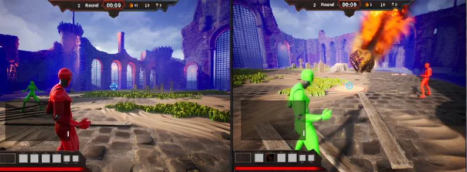

다른 사람 화면에서는 스킬이 (0, 0, 0)에 떨어지던 문제
- 증상
- 지점 스킬을 쓴 본인 화면에서는 마우스 위치에 떨어지는데, 다른 플레이어 화면에서는 원점에 생성됐습니다.
- 원인
- 스폰 위치를
GetPlayerViewPoint로 사용자 쪽에서만 계산하고 있어, 그 값이 다른 클라이언트로 복제되지 않았습니다. - 해결
- Spawn Location을 스킬 컴포넌트가 관리하게 옮기고
DOREPLIFETIME으로 복제했습니다. - 결과
- 모든 클라이언트가 같은 위치에 스킬을 생성합니다. 이후로는 "이 값은 누가 계산하고 누가 받는가"를 먼저 정하고 기능을 만듭니다.
